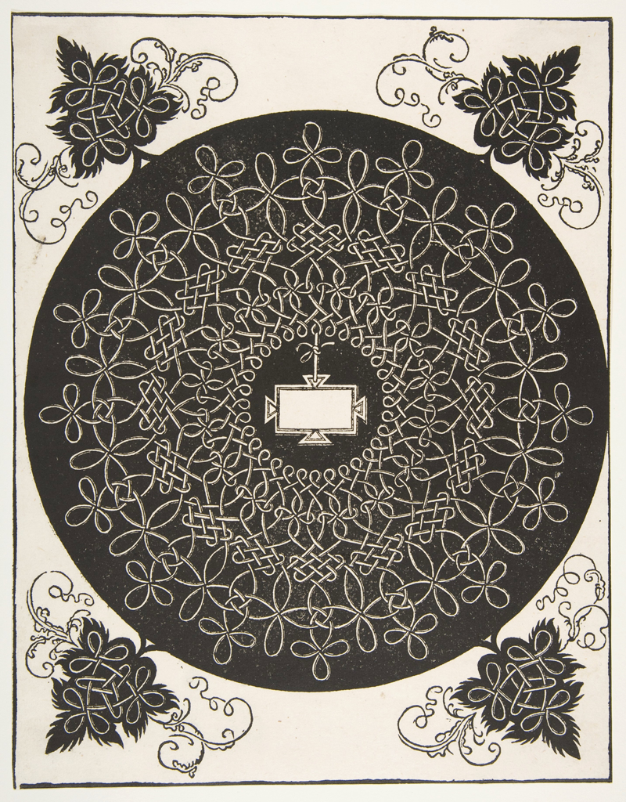
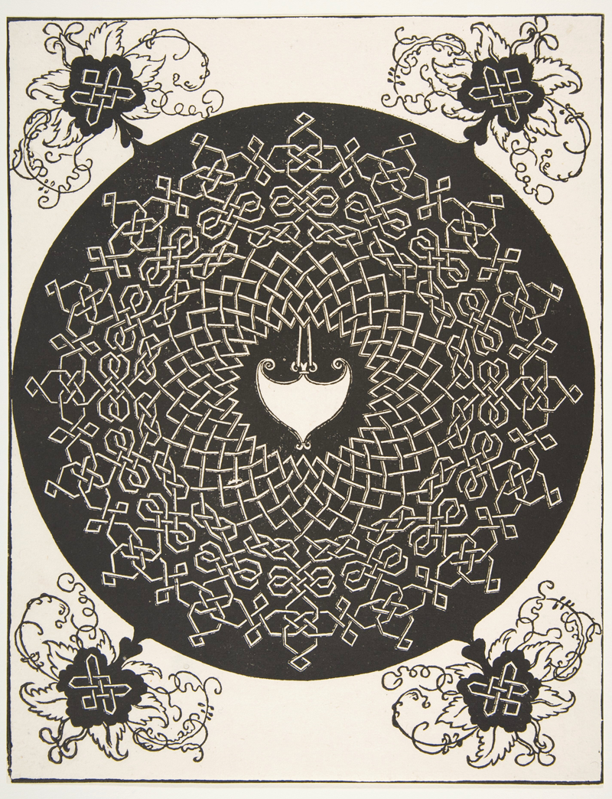
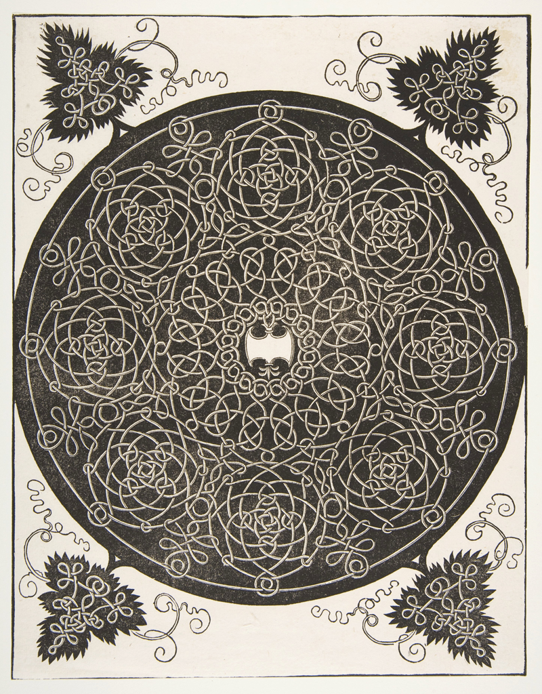
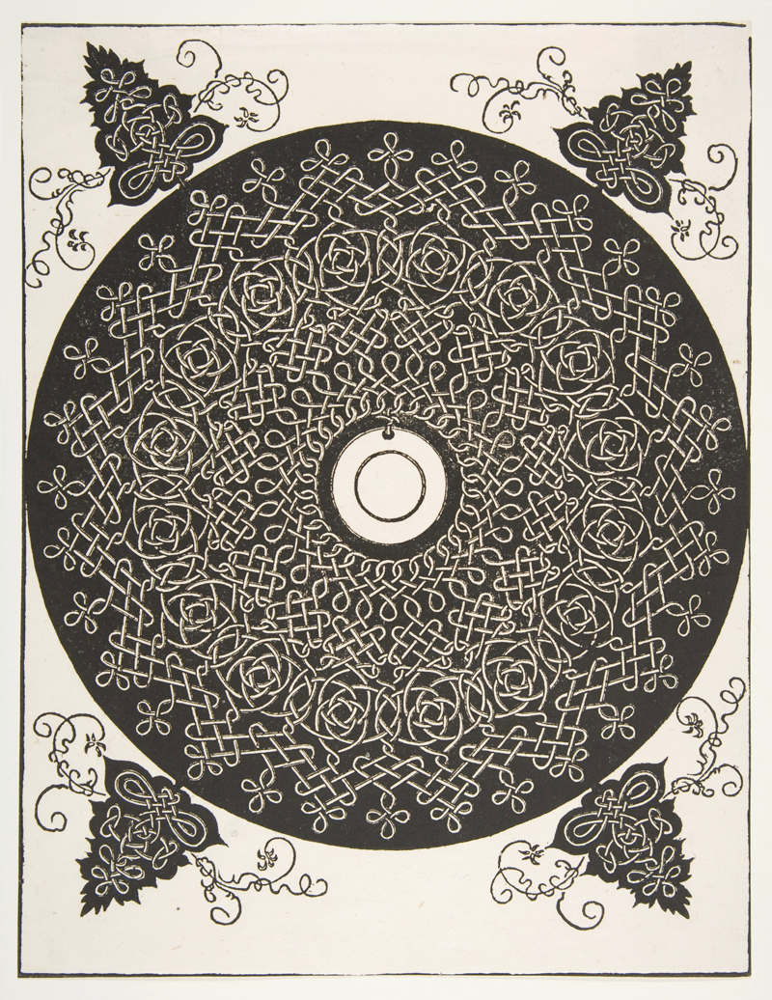
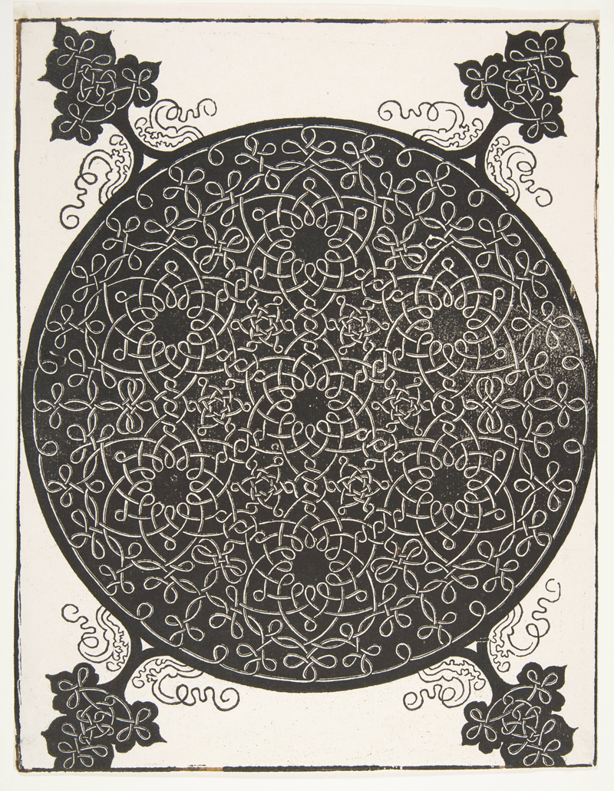
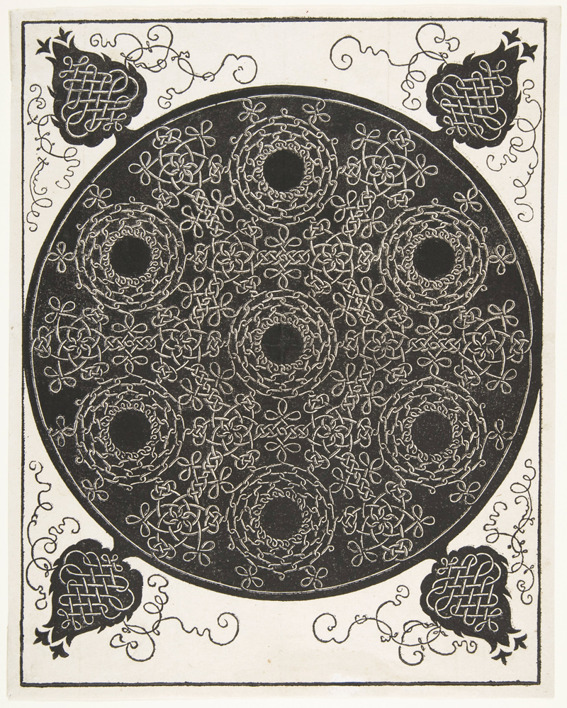

In Peter Cornell’s 1987 novel, The Ways of Paradise: Selected Notes from a Lost Manuscript, the elusive, unnamed scholar-protagonist writes, “Leonardo da Vinci’s and Dürer’s labyrinthine knots without beginning or end can be seen as maps of the universe.” The knots he references are six compositions originally created as engravings attributed to a similarly mysterious “Academy of Leonardo da Vinci” and later translated into woodcuts by the much better documented Albrecht Dürer (1471–1528). Cornell’s scholar is obsessed with epistemological systems, and in his random (or not?) array of notes, one can discern a desire to unify disparate ordering schemes of human invention. Freud, etymology, and pilgrimages are among his fixations. The knots, each a contained, regulated infinitum, are drawn into the scholar’s web of discrete knowledge systems.
Each knot is in fact a group of intricately entwined infinity loops made up of repeating patterns that follow circular paths. Four smaller, single loops of roughly triangular formation frame each of the knots, effectively squaring the circles with the rectilinear sheets of paper on which they are printed. In the Leonardo engravings, these smaller, “framing” knots are detached; Dürer, however, enclosed the central knots and the peripheral ones within continuous, dark backgrounds.